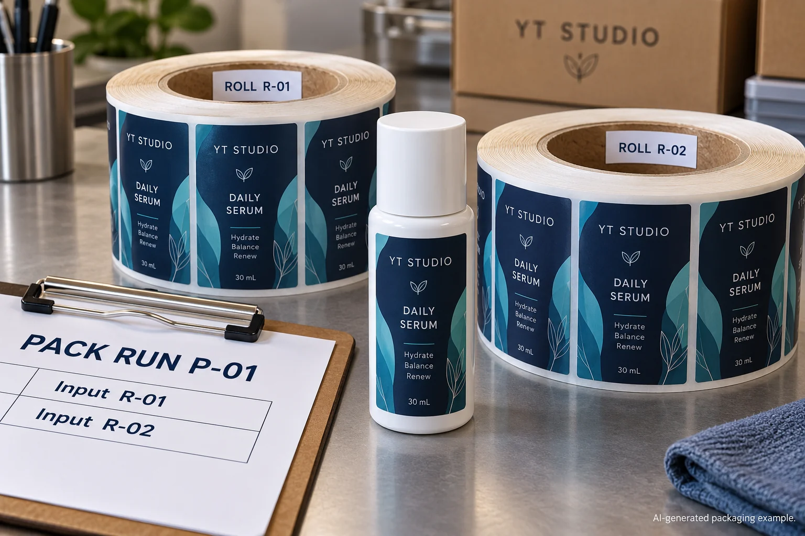
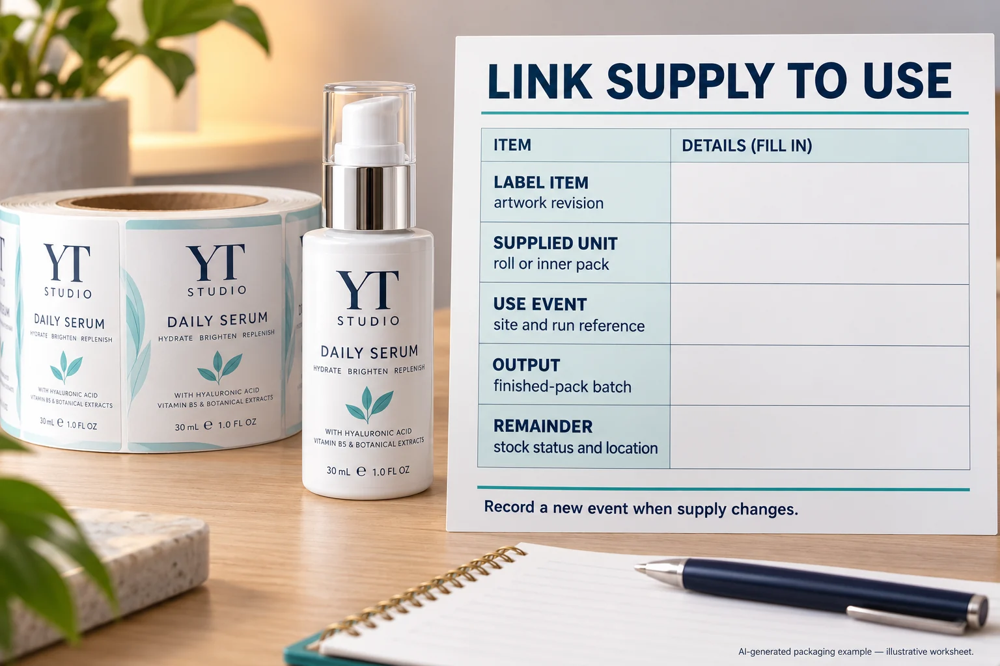

A label can have the correct product name and approved artwork while its production history remains unclear. Imagine two deliveries of the same serum label on the co-packer's shelf. One roll is partly used, another is opened during a later run, and the remaining stock goes back to storage. The item code explains what was ordered. It does not, by itself, explain which finished packs used each supply.
For cosmetic label lot traceability, connect the actual supplied units to the site's use events and output batches. Agree the references before the rolls reach the line, record changes when they happen and preserve the relationship for remaining stock. A familiar label design is not a substitute for that record.
This guide helps procurement and packaging teams plan the information handoff. It does not certify a traceability system, prescribe legal retention periods or establish the scope of a product recall.

Give the item, supply and use event different jobs
An item reference identifies the label being purchased. Its artwork revision identifies the approved content. A supplier's job, lot, roll or inner-pack reference can identify a particular supplied quantity. The receiving site then has its own run and finished-pack references.
Ask what each code means instead of forcing every stage into one identifier. Two supplied units can carry the same artwork while belonging to different supply records. Conversely, one supplied unit can be used across more than one packing event. The actual relationship matters more than how elaborate the numbering system looks.
Use the SKU and artwork dictionary to settle which item is ordered. Keep that master information separate from the record of where a particular supply was actually used.
Agree the receiving cross-reference before delivery
Ask the label supplier which identification appears on the roll, inner pack and dispatch record. Have the receiving team explain how those references enter its own records. If the supplier identifies a whole pack rather than individual rolls, establish what information remains available after that pack is opened.
This is a specification discussion, not a reason to invent a serialization service. Procurement should request the information its site needs and obtain an explicit supplier response about what can be provided. A sample carton photograph may help explain the proposed identification; it is not evidence that a later delivery has been recorded correctly.
If a reference is missing at receipt, record the gap and route it to the responsible owner. Do not create a plausible-looking supplier lot number from the delivery date. A local receiving reference can be useful when its meaning and link to available supplier records are clear.
Capture the event where the relationship changes
GS1's explanation of its traceability framework distinguishes the activity being tracked from the data describing that activity. For this purchasing task, the useful question is which receiving, use and stock-return events the site needs to connect. That framework does not validate a particular spreadsheet or determine your site's required records.
Have the production and quality owners define when recording happens and who is responsible. Relevant events may include opening a supplied unit, changing to another supply during a run or returning an unused remainder. Use the site's actual workflow; this article does not specify an automatic scanning system or a universal counting method.
Record known allocation information with its basis. Do not turn a rough estimate into an exact consumption figure. Where the site cannot establish a narrower relationship, preserve that uncertainty rather than drawing a precise boundary unsupported by records.
Use one event-link record the team can maintain
| Field | What to capture | Question it answers |
|---|---|---|
| Label identity | Ordered item, component and artwork revision | Which approved label is involved? |
| Supplied unit | Actual supplier references and local receiving cross-reference | Which physical supply entered the process? |
| Use event | Site, run reference and responsible record | Where is the supply-to-use relationship documented? |
| Output identity | Finished-pack batch or other site-defined output reference | Which output does the record connect? |
| Allocation basis | Recorded quantity or another supported association, with limitations | How precise is the claimed relationship? |
| Remaining supply | Unit identity, stock status and location | What returned to storage and remains available? |
| Confirmation | Owner, supporting record and unresolved gap | Who can explain or correct the entry? |
Start with the item and supplied-unit identity. Cross-reference them at receiving. At the defined use event, connect the unit to the actual run and output reference. Record a changeover or returned remainder separately when it changes the relationship. Finally, reconcile the entries through the site's responsible process.
Try the lookup in both directions: from an identified supplied unit to its recorded uses, then from a finished-pack reference back to its recorded label supply. A successful search proves that those records can be retrieved. It does not prove that every physical unit was correctly identified or that the product is conforming.

A simple run and a split-use run need different records
In one hypothetical arrangement, a single identified supply is used on one defined run and the site's controlled record already captures that relationship. Procurement can confirm that the supplier's dispatch references are compatible with that process. Adding another uncontrolled spreadsheet would not necessarily improve the result.
Another arrangement uses a partial roll on several runs or changes supply during a run. One line saying “serum labels used” loses the distinctions the site may later need. Preserve the actual multiple relationships and the returned remainder's identity. The responsible team should decide what precision its process can support and how uncertainty is handled.
Neither situation justifies promising an exact investigation boundary from a design code alone. The record should show what was captured, what was inferred and what remains unknown.
Keep tracing separate from acceptance and investigation
A complete history does not establish that a label meets its specification. The incoming sampling guide addresses the separate acceptance decision. Likewise, an identified retained sample can preserve a useful physical reference without supplying the missing use-event history.
If a concern is later reported, the quality-evidence guide helps connect the observation and approved reference. Let the responsible team decide the investigation and stock response. A procurement worksheet cannot establish a cause, authorize continued use or decide a recall.
For custom cosmetic label supply, send the item list, artwork revisions, dimensions and quantities alongside the receiving and supply-identification requirements your site actually needs. Ask which dispatch references are available and how the site will map them. Prepare an inquiry, then attach records in email or WhatsApp; the form creates a message draft rather than uploading files.